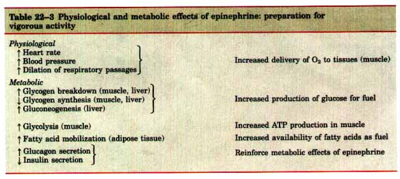
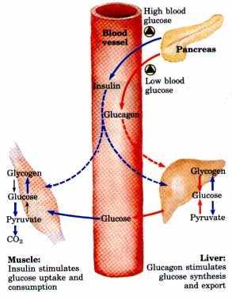
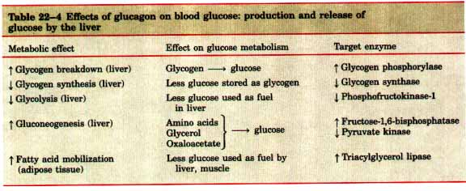
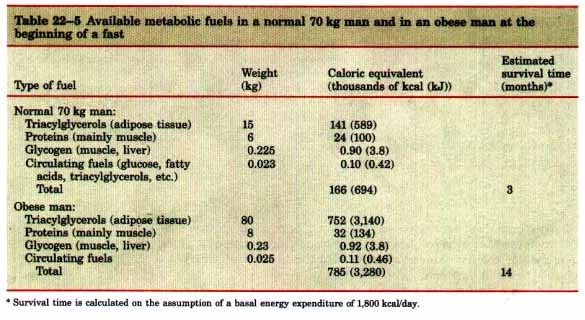
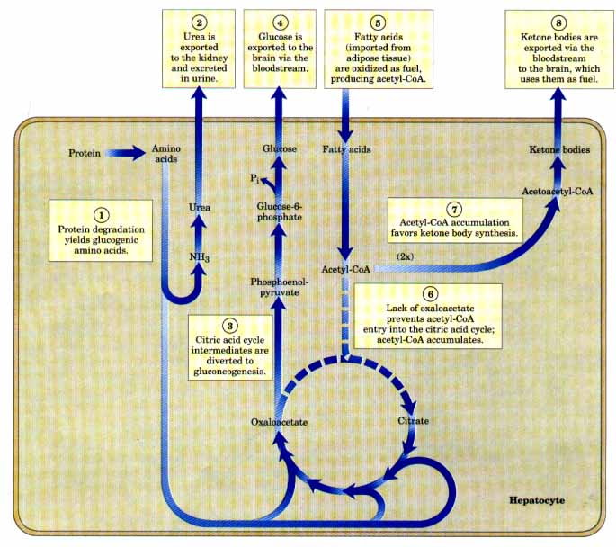
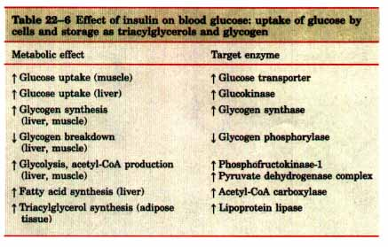
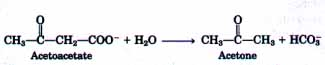

Our discussions of metabolic regulation and hormone action now come together as we return to the hormonal regulation of blood glucose level. The minute-by-minute adjustments that keep the blood glucose level near 4.5 mM involve the combined actions of insulin, glucagon, and epinephrine on metabolic processes in many body tissues, but especially in liver, muscle, and adipose tissue. Insulin signals these tissues that the blood glucose concentration is higher than necessary; as a result, the excess glucose is taken up from the blood into cells and converted to storage compounds, glycogen and triacylglycerols. Glucagon carries the message that blood glucose is too low, and the tissues respond by producing glucose through glycogen breakdown and gluconeogenesis and by oxidizing fats to reduce the use of glucose. Epinephrine is released into the blood to prepare the muscles, lungs, and heart for a burst of activity. Insulin, glucagon, and epinephrine are the primary determinants of the metabolic activities of muscle, liver, and adipose tissue.
When an animal is confronted with a stressful situation that requires increased activity-fighting or fleeing, in the extreme case-neuronal signals from the brain trigger the release of epinephrine and norepinephrine from the adrenal medulla. Both hormones increase the rate and strength of the heartbeat and raise the blood pressure, thereby increasing the flow of 02 and fuels to the tissues, and dilate the respiratory passages, facilitating the uptake of O2 (Table 22-3).

In its effects on metabolism, epinephrine acts primarily on muscle, adipose tissue, and liver. It activates glycogen phosphorylase and inactivates glycogen synthase (by cAMP-dependent phosphorylation of the enzymes; see Fig. 14-18 and p. 615), thus stimulating the conversion of liver glycogen into blood glucose, the fuel for anaerobic muscular work. Epinephrine also promotes the anaerobic breakdown of the glycogen of skeletal muscle into lactate by fermentation, thus stimulating glycolytic ATP formation. The stimulation of glycolysis is accomplished by raising the concentration of fructose-2,6-bisphosphate, a potent allosteric activator of the key glycolytic enzyme phosphofructokinase-1 (see Figs. 19-7, 19-8). Epinephrine also stimulates fat mobilization in adipose tissue, activating (by cAMP-dependent phosphorylation) the triacylglycerol lipase (see Fig. 16-3). Finally, epinephrine stimulates the secretion of glucagon and inhibits the secretion of insulin, reinforcing its effect of mobilizing fuels and inhibiting fuel storage.
Glucagon Signals Low Blood GlucoseEven in the absence of significant physical activity or stress, several hours after the intake of dietary carbohydrate, blood glucose levels fall to below 4.5 mM because of the continued oxidation of glucose by the brain and other tissues. Lowered blood glucose triggers secretion of glucagon and decreases insulin release (Fig. 22-22). Glucagon causes an increase in blood glucose concentration in two ways (Table 22-4). Like epinephrine, glucagon stimulates the net breakdown of liver glycogen by activating glycogen phosphorylase and inactivating glycogen synthase; both effects are the result of phosphorylation of the regulated enzymes, triggered by cAMP. But, unlike epinephrine, glucagon inhibits glucose breakdown by glycolysis in the liver and stimulates glucose synthesis by gluconeogenesis. Both of these effects result from lowering the level of fructose-2,6-bisphosphate, an allosteric inhibitor of the gluconeogenic enzyme fructose-1,6-bisphosphatase (FBPase-1) and an activator of phosphofructokinase-l. Recall that the fructose-2,6-bisphosphate level is ultimately controlled by a cAMP-dependent protein phosphorylation reaction (see Fig. 19-8). Glucagon also inhibits the glycolytic enzyme pyruvate kinase (by promoting its cAMPdependent phosphorylation), thus blocking the conversion of phosphoenolpyruvate to pyruvate and preventing oxidation of pyruvate via the citric acid cycle; the resulting accumulation of phosphoenolpyruvate favors gluconeogenesis. |
 Figure 22-22 Regulation of blood glucose by insulin and glucagon. Blue arrows indicate processes stimulated by insulin; red arrows indicate processes stimulated by glycogen. High blood glucose results in insulin secretion by the pancreas, and low blood glucose leads to glucagon release, as described in the text. |

By stimulating liver glycogen breakdown, preventing glucose utilization in the liver by glycolysis, and promoting gluconeogenesis, glucagon enables the liver to export glucose to the blood, restoring blood glucose to its normal level (Fig. 22-22).
Although its primary target is the liver, glucagon (like epinephrine) also affects adipose tissue, activating triacylglycerol lipase by causing its cAMP-dependent phosphorylation. This lipase liberates free fatty acids, which are exported to the liver and other tissues as fuel, thus sparing glucose for the brain. The net effect of glucagon is therefore to stimulate glucose synthesis and release by the liver and to cause the mobilization of fatty acids from adipose tissue, to be used instead of glucose as fuel for tissues other than the brain (Table 22-4). All of these affects of glucagon are mediated by cAMP-dependent protein phosphorylation.
The fuel reserves of a normal adult human are of three types: glycogen stored in the liver and in muscle in relatively small quantities; larger quantities of triacylglycerols in adipose tissues; and tissue proteins, which can be degraded when necessary to provide fuel (Table 22-5).
Figure 22-23 shows the changes in fuel metabolism during starvation. After an overnight fast, almost all of the liver glycogen and most of the muscle glycogen have been depleted. Within 24 hours, the blood glucose concentration begins to fall, insulin secretion slows, and glucagon secretion is stimulated. These hormonal signals result in the mobilization of triacylglycerols, which become the primary fuels for muscle and liver. To provide glucose for the brain, the liver degrades certain proteins (those most expendable in an organism not ingesting food). Their amino groups are converted into urea in the liver; the urea is exported via the bloodstream to the kidney and is excreted. Also in the liver, the carbon skeletons of glucogenic amino acids (see Table 19-3) are converted into pyruvate or intermediates of the citric acid cycle. These intermediates, as well as the glycerol derived from triacylglycerols in adipose tissue, provide the starting materials for gluconeogenesis in the liver, yielding glucose for the brain.

Eventually the use of citric acid cycle intermediates for gluconeogenesis depletes oxaloacetate, preventing the entry of acetyl-CoA into the cycle (Fig. 22-23). Acetyl-CoA produced by fatty acid oxidation accumulates, favoring the formation of acetoacetyl-CoA and ketone bodies in the liver. After a few days of fasting, the levels of ketone bodies in the blood rise as these fuels are exported from the liver to heart and skeletal muscle and the brain, which use them instead of glucose.
The triacylglycerols stored in the adipose tissue of an adult of normal weight provide enough fuel to maintain a basal rate of metabolism for about three months; a very obese adult has enough stored fuel to endure a fast of more than a year (Table 22-5). However, such a fast would be extremely dangerous; it would almost certainly lead to severe overproduction of ketone bodies (described below), and perhaps to death. When fat reserves are gone, the degradation of essential proteins begins; this leads to loss of heart and liver function, and death.

Figure 22-23 Fuel metabolism in the liver during prolonged starvation. After the depletion of stored carbohydrates, proteins become an important source of glucose, produced from glucogenic amino acids by gluconeogenesis (steps l through 4£©. Fatty acids imported from adipose tissue are converted into ketone bodies for export to the brain (steps 5 through 8£©. The broken arrows represent reactions through which there is reduced flux during starvation.
When glucose enters the bloodstream from the intestine after a carbohydrate-rich meal, the resulting increase in blood glucose causes increased secretion of insulin and decreased secretion of glucagon (Fig. 22-22). Insulin stimulates glucose uptake by muscle tissue (Table 22-6), where the glucose is converted to glucose-6-phosphate. Insulin also activates glycogen synthase and inactivates glycogen phosphorylase, so that much of the glucose-6-phosphate is channeled into glycogen. As a consequence of accelerated uptake of glucose from the blood, the blood glucose concentration falls to the normal level, slowing the rate of insulin release from the pancreas. Thus there is a closely adjusted feedback relationship between the rate of insulin secretion and the blood glucose concentration. The effect of this regulation is to hold the blood glucose concentration nearly constant in the face of large fluctuations in the dietary intake of glucose.
| Insulin also stimulates the storage of
excess fuel as fat. It activates both the oxidation of
glucose-6-phosphate to pyruvate via glycolysis and the
oxidation of pyruvate to acetyl-CoA. Acetyl-CoA not
oxidized further for energy production is used for fatty
acid synthesis in the liver, and these fatty acids are
exported as the triacylglycerols of plasma lipoproteins
(VLDLs; see p. 677) to the adipose tissue. Insulin
stimulates triacylglycerol synthesis in adipocytes, using
fatty acids released from the VLDL triacylglycerols.
These fatty acids are ultimately derived from the excess
glucose taken from the blood by the liver. In summary, the effect of insulin is to favor the conversion of excess blood glucose into two storage forms: glycogen (in the liver and muscle) and triacylglycerols (in adipose tissue) (Table 22-6). |
 |
In the late nineteenth century, the surgical removal of the pancreas of dogs was found to cause a condition closely resembling human diabetes mellitus. Injection of extracts of normal pancreas into these dogs alleviated the diabetic symptoms. The active factor present in pancreatic extracts, insulin ("islet substance"), was finally isolated in pure form in 1922 by Banting, Best, Collip, and Macleod. Insulin quickly came into use in the treatment of human diabetes and has become one of the most important therapeutic agents known to medicine; it has prolonged countless lives.
Diabetes mellitus, caused by a deficiency in the secretion or action of insulin, is a relatively common disease: nearly 5% of the United States population shows some degree of abnormality in glucose metabolism indicative of diabetes or a tendency toward it. Diabetes mellitus is really a group of diseases in which the regulatory activity of insulin may be defective in different ways. Moreover, several other hormones can influence the metabolism of glucose. There are two major clinical classes of the disease: insulin-dependent diabetes mellitus (IDDM) and non-insulin-dependent diabetes mellitus (NIDDM).
In the former, the disease begins early in life and quickly becomes severe. The latter is slow to develop, milder, and often goes unrecognized. IDDM requires insulin therapy and careful, lifelong control of the balance between glucose intake and insulin dose. Characteristic symptoms of diabetes are excessive thirst and frequent urination (polyuria), leading to the intake of large volumes of water (polydipsia). These changes are due to the excretion of large amounts of glucose in the urine, a condition known as glucosuria. The term diabetes mellitus means "excessive excretion of sweet urine."
Another characteristic metabolic change resulting from the defect in insulin action in diabetes is excessive but incomplete oxidation of fatty acids in the liver, resulting in an overproduction of the ketone bodies acetoacetate and β-hydroxybutyrate, which cannot be used by the extrahepatic tissues as fast as they are made in the liver. In addition to R-hydroxybutyrate and acetoacetate, the blood of diabetics also contains acetone, which results from the spontaneous decarboxylation of acetoacetate:

Acetone is volatile and is exhaled, giving the breath of an untreated diabetic a characteristic odor sometimes mistaken for ethanol. A diabetic experiencing mental confusion because of high blood glucose is occasionally misdiagnosed as intoxicated, an error that can be fatal. The overproduction of ketone bodies, called ketosis, results in their appearance in greatly increased concentrations in the blood (ketonemia) and urine (ketonuria) (see Table 16-2).
The oxidation of triacylglycerols to form ketone bodies produces carboxylic acids, which ionize, releasing protons. In uncontrolled diabetes this can overwhelm the capacity of the bicarbonate buffering system of blood and produce a lowering of blood pH called acidosis, a potentially life-threatening condition.
Biochemical measurements on the blood and urine are essential in the diagnosis and treatment of diabetes, which causes profound changes in metabolism. A sensitive diagnostic criterion is provided by the glucose-tolerance test. After a night without food, the patient drinks a test dose of 100 g of glucose dissolved in a glass of water. The blood glucose concentration is measured before the test dose and at 30 min intervals for several hours thereafter. A normal individual assimilates the glucose readily, the blood glucose rising to no more than about 9 or 10 mM; little or no glucose appears in the urine. Diabetic individuals show a marked deficiency in assimilating the test dose of glucose. The blood glucose level increases far above the kidney threshold, which is about 10 mM, causing glucose to appear in the urine.